randomcov
Named random correlation and covariance ensembles for stress-testing estimators, portfolio constructions and probabilistic models.
Fifteen literature-grounded generators — seeded, tested, one line each. Name the measure, or the claim means nothing.
pip install randomcov
from randomcov import random_correlation_matrix
C = random_correlation_matrix(n=50, corr_method="onion", corr_kwargs={"eta": 1.0, "rng": 7})
from randomcov import random_covariance_matrix
S = random_covariance_matrix(n=50, corr_method="hierarchical", var_method="lognormal")Why named ensembles
There is no canonical “uniform” measure over covariance matrices — scale alone makes the phrase meaningless — and even on the set of correlation matrices (the elliptope) the natural-looking uniform, LKJ with $\eta=1$, concentrates on weak correlations as $n$ grows: every pairwise correlation is $O_p(1/\sqrt{n})$. A method that “works for random covariance matrices” has therefore claimed nothing until the measure is named. This package exists so that claims can read: under LKJ: X; under a spiked spectrum: Y; under a sparse graphical model: Z — each row reproducible from a seed.
Gallery
One draw per generator ($n=60$, seed 7, rows seriated for legibility).
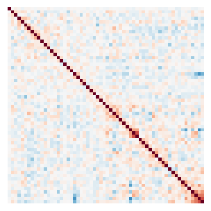
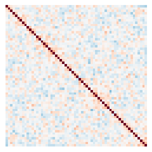
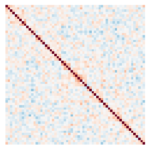
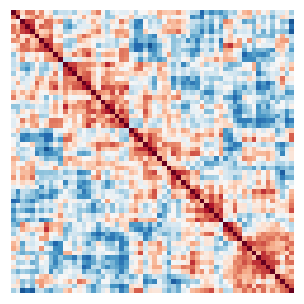
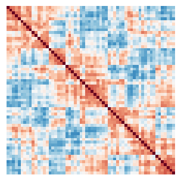
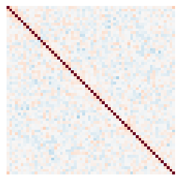
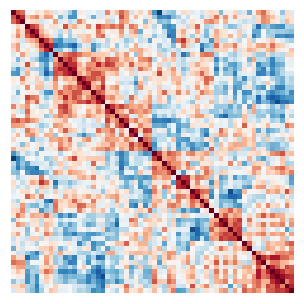
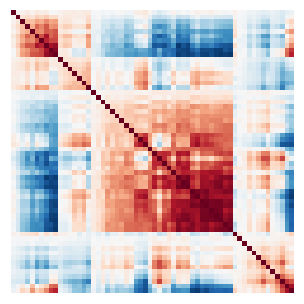
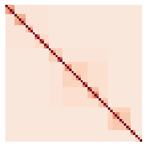
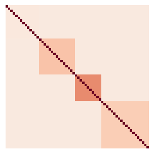
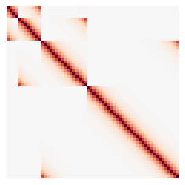
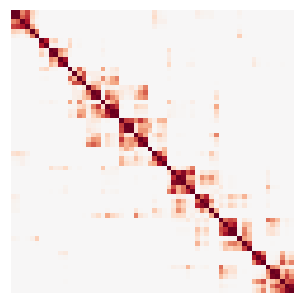
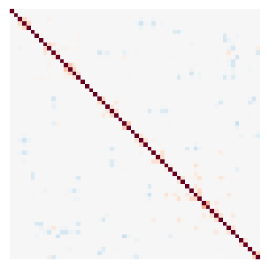
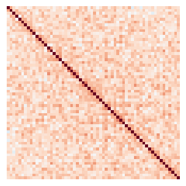
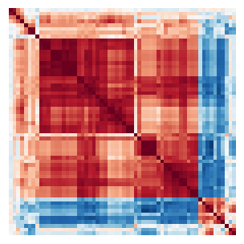
Generators
lkj
lkj_corr(n, eta=1.0)
The LKJ density $\propto \det(C)^{\eta-1}$ via the Cholesky-factor construction; $\eta = 1$ is uniform over the elliptope, larger $\eta$ concentrates toward the identity.
Lewandowski, Kurowicka & Joe (2009), J. Multivariate Analysis.
onion
onion_corr(n, eta=1.0, rng=None)
The extended onion method: grow the matrix one variable at a time, the new column’s squared radius drawn $\mathrm{Beta}\!\left(\tfrac{k}{2},\,\beta_k\right)$ with a level-dependent parameter — exact LKJ($\eta$) sampling with $O(n^3)$ cost.
Ghosh & Henderson (2003); LKJ (2009).
vine
vine_corr(n, eta=1.0, rng=None)
C-vine construction: partial correlations sampled as shifted Beta variables with level-dependent parameters, then converted to plain correlations by the vine recursion. Substituting any other law on $(-1,1)$ for the Beta targets any elliptope measure — the most flexible construction in the catalog.
Joe (2006), J. Multivariate Analysis.
archakov_hansen
archakov_hansen_corr(n, scale=0.6, rng=None)
The off-diagonal of $\log C$ is an unconstrained vector (a matrix analogue of Fisher’s $z$): sample it Gaussian, then restore the unit diagonal with the Archakov–Hansen fixed point. A modern route to smooth, dense correlation.
Archakov & Hansen (2021), Econometrica.
spectrum
spectrum_corr(n, kind="dirichlet" | "exp" | "marchenko_pastur" | "spiked", rng=None)
Prescribe the eigenvalues, rotate by a Haar frame, then restore the unit diagonal exactly with Givens rotations, which preserve the spectrum. Kinds: exponential (Bendel–Mickey’s classic), Dirichlet, a Marchenko–Pastur bulk (aspect ratio $q$), or Johnstone’s spiked model (bulk plus a few large eigenvalues — the random-matrix caricature of equity markets).
Bendel & Mickey (1978); Davies & Higham (2000); Johnstone (2001).
wishart
wishart_corr(n, ...)
Normalized Wishart: the sample correlation of Gaussian data — the estimation-noise ensemble. Small degrees of freedom give the ill-conditioned regime every shrinkage paper lives in.
Classical.
residuals
residuals_corr(n, ...)
Sample correlation of residual-driven paths: strong, near-singular, market-like correlation fields (typical mean $|\rho| \approx 0.4$).
This package.
factor
factor_corr(n, k=3, sparse_links=0, link_size=0.3, rng=None)
$C = BB' + \mathrm{sparse} + D$: a $k$-factor model with decaying factor strengths, optionally perturbed by sparse off-grammar links — the “approximate factor” world, and the natural test bed for methods that assume low-rank-plus-diagonal structure (including the case where that assumption is slightly wrong).
Approximate-factor literature (Chamberlain–Rothschild; Fan et al.).
hierarchical
hierarchical_corr(n, rho_top=0.1, rng=None)
Ultrametric (cophenetic) correlation from a random dendrogram: correlation depends only on the first common ancestor, increasing toward the leaves. The class hierarchical risk parity implicitly believes in — and exactly the covariance of a tree of uniform shared effects.
Tumminello, Lillo & Mantegna, hierarchically nested factor models.
block_equicorr
block_equicorr(n, blocks=4, rho_within=None, rho_between=0.1, rng=None)
Constant correlation within each block, constant between blocks (validity requires $\rho_\text{between} \le \rho_\text{within}$, checked). The block form of Engle–Kelly’s DECO.
Engle & Kelly (2012), J. Business & Economic Statistics.
ar1
ar1_corr(n, rho=None, rng=None)
The Kac–Murdock–Szegő Toeplitz matrix $\rho^{|i-j|}$ — banded decay, the time-series and spatial-line classic, with a known closed-form inverse.
Kac, Murdock & Szegő (1953).
kernel
kernel_corr(n, d=2, length_scale=None, nu="rbf" | "matern32", rng=None)
A Gaussian field sampled at $n$ random points in $d$ dimensions with an RBF or Matérn-3/2 kernel: smooth spatial correlation, full rank, geometry-driven.
Spatial statistics / Gaussian-process literature.
sparse_precision
sparse_precision_corr(n, density=0.05, strength=0.4, rng=None)
A random sparse precision matrix (Erdős–Rényi conditional-independence graph, diagonally dominant), inverted and normalized: dense correlation with sparse conditional structure — the texture opposite to factor models, and the ensemble on which eigenvalue-based methods deserve to struggle.
Gaussian graphical model literature.
walk
walk_corr(n, rho=0.3, steps=5, epsilon=0.1)
A perturbation random walk on the elliptope: symmetric noise added to a starting equicorrelation, projected back by nearest-correlation each step. Wanders toward the boundary — near-singular by design.
This package; nearest-correlation per Higham (2002).
animals
animals_corr(n, num_steps=500)
Emergent correlation from an agent-based simulation: animal sizes grow when animals meet, so spatial proximity becomes correlation. No parametric family — a reminder that the world’s covariances are generated by mechanisms, not measures.
This package.
Variances and covariances
random_covariance_matrix(n, corr_method=..., var_method="lognormal" | "unit")
composes any correlation ensemble with a variance law.
geodesic_interpolation_towards_perfect interpolates smoothly between
covariance structures along the SPD manifold:
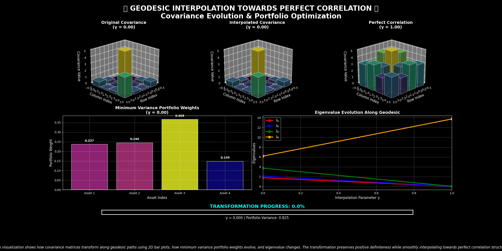
Links
GitHub · PyPI · used by the winning package’s ensemble test batteries.